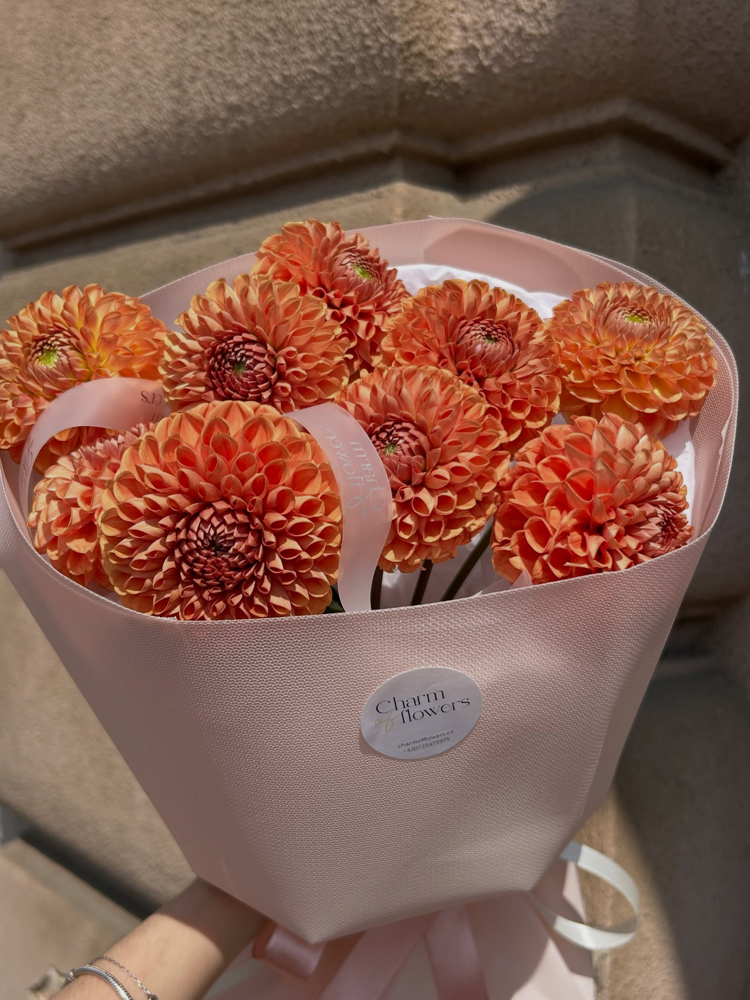

Katalog
Vyberte si kytici
Ceny jsou orientační — každá kytice je originál z toho, co je ten den nejčerstvější. Vyberte fotku, pošlete poptávku a my se ozveme.



Každá kytice je originál — složení se mění podle sezóny a denní nabídky, fotky jsou ilustrační. Styl a barevnost vždy zachováme.
Jak to funguje
Objednávka ve třech krocích
Vyberte si
Z katalogu, z Instagramu, nebo jen řekněte rozpočet a příležitost — zbytek vymyslíme.
Zavolejte nebo napište
Telefon 723 477 375, zpráva na Instagramu, nebo poptávkový formulář. Domluvíme detaily a cenu.
Vyzvednete, nebo doručíme
Na Pražské 43, nebo rozvoz po Plzni a okolí — šetrně a s péčí, od 30 do 60 minut.